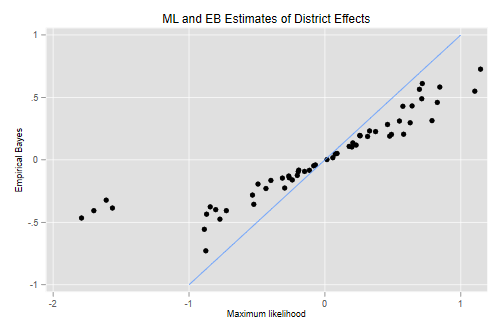
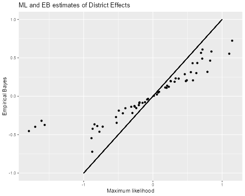
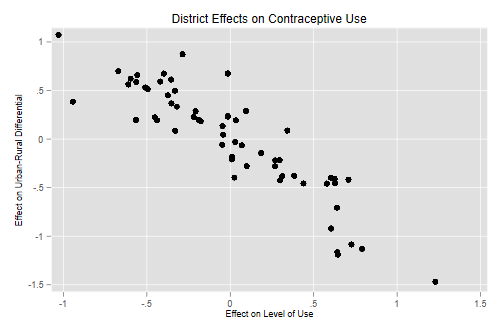
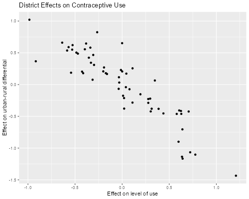

<h2 class="first" id="contraceptive-use-in-bangladesh">Contraceptive Use
in Bangladesh</h2>
<p>The Stata manual [ME, p. 164] analyzes data from the 1989 Bangladesh
fertility survey, see Huq and Cleland (1990), also analyzed by Ng et
al. (2006).</p>

{% include srtabs.html %}

<pre class='stata'>. webuse bangladesh, clear
(Bangladesh Fertility Survey, 1989)

. desc

Contains data from https://www.stata-press.com/data/r17/bangladesh.dta
 Observations:         1,934                  Bangladesh Fertility Survey, 1989
    Variables:             8                  28 May 2020 20:27
                                              (_dta has notes)
────────────────────────────────────────────────────────────────────────────────
Variable      Storage   Display    Value
    name         type    format    label      Variable label
────────────────────────────────────────────────────────────────────────────────
district        byte    %9.0g                 District
c_use           byte    %9.0g      yesno      Use contraception
urban           byte    %9.0g      urban      Urban or rural
age             float   %6.2f                 Age, mean centered
child1          byte    %9.0g                 1 child
child2          byte    %9.0g                 2 children
child3          byte    %9.0g                 3 or more children
children        byte    %18.0g     childlbl   Number of children
────────────────────────────────────────────────────────────────────────────────
Sorted by: district
</pre>
<pre class='r'>> library(haven)
> bd &lt;- read_dta("https://www.stata-press.com/data/r11/bangladesh.dta")
> names(bd)
[1] "district" "c_use"    "urban"    "age"      "child1"   "child2"   "child3"  
</pre>
<h3 id="a-random-intercept-model">A Random-Intercept Model</h3>
<p>We will fit a logit model predicting contraceptive use by urban
residence, age and number of children, with a random intercept by
district. <span class="stata">We use <code>melogit</code>, which allows
us to obtain estimates of the district effect, and supersedes
<code>xtmelogit</code> and <code>meqrlogit</code> as of Stata
16.</span></p>
<pre class='stata'>. melogit c_use urban age child1 child2 child3 || district: 

Fitting fixed-effects model:

Iteration 0:   log likelihood = -1229.5485  
Iteration 1:   log likelihood = -1228.5268  
Iteration 2:   log likelihood = -1228.5263  
Iteration 3:   log likelihood = -1228.5263  

Refining starting values:

Grid node 0:   log likelihood = -1219.2681

Fitting full model:

Iteration 0:   log likelihood = -1219.2681  (not concave)
Iteration 1:   log likelihood = -1207.5978  
Iteration 2:   log likelihood = -1206.8428  
Iteration 3:   log likelihood = -1206.8322  
Iteration 4:   log likelihood = -1206.8322  

Mixed-effects logistic regression               Number of obs     =      1,934
Group variable: district                        Number of groups  =         60

                                                Obs per group:
                                                              min =          2
                                                              avg =       32.2
                                                              max =        118

Integration method: mvaghermite                 Integration pts.  =          7

                                                Wald chi2(5)      =     109.60
Log likelihood = -1206.8322                     Prob > chi2       =     0.0000
─────────────┬────────────────────────────────────────────────────────────────
       c_use │ Coefficient  Std. err.      z    P>|z|     [95% conf. interval]
─────────────┼────────────────────────────────────────────────────────────────
       urban │   .7322765   .1194857     6.13   0.000     .4980888    .9664641
         age │  -.0264981   .0078916    -3.36   0.001    -.0419654   -.0110309
      child1 │   1.116001   .1580921     7.06   0.000     .8061465    1.425856
      child2 │   1.365895   .1746691     7.82   0.000      1.02355     1.70824
      child3 │   1.344031   .1796549     7.48   0.000     .9919139    1.696148
       _cons │   -1.68929   .1477591   -11.43   0.000    -1.978892   -1.399687
─────────────┼────────────────────────────────────────────────────────────────
district     │
   var(_cons)│    .215618   .0733222                      .1107208    .4198954
─────────────┴────────────────────────────────────────────────────────────────
LR test vs. logistic model: chibar2(01) = 43.39       Prob >= chibar2 = 0.0000

. estimates store ri

. mata exp(st_matrix("e(b)"))                 
                 1             2             3             4             5
    ┌───────────────────────────────────────────────────────────────────────
  1 │  2.079809828   .9738498479   3.052623679   3.919229121   3.834469354
    └───────────────────────────────────────────────────────────────────────
                 6             7
     ─────────────────────────────┐
  1     .184650664   1.240628421  │
     ─────────────────────────────┘
</pre>
<p><span class="r">R’s <code>lme4</code> uses the Laplace approximation
by default, but also lets us specify the number of adaptive quadrature
points. We try both and compare estimates</span></p>
<pre class='r'>> library(lme4)
> ri &lt;- glmer(c_use ~ urban + age + child1 + child2 + child3 + 
+         (1 | district), data =bd, family=binomial) 
> ri7 &lt;- glmer(c_use ~ urban + age + child1 + child2 + child3 + 
+         (1 | district), data =bd, family=binomial, nAGQ=7)
> cbind(fixef(ri), fixef(ri7))
                   [,1]        [,2]
(Intercept) -1.68878347 -1.68929490
urban        0.73283848  0.73228505
age         -0.02649254 -0.02649815
child1       1.11581705  1.11600499
child2       1.36570152  1.36589348
child3       1.34361785  1.34403031
> c(unlist(VarCorr(ri)), unlist(VarCorr(ri7)))
 district  district 
0.2124891 0.2156170 
</pre>
<p><span class="r">The estimates of the coefficients are practically the
same, and the estimates of the variance of the intercepts are very
similar. In my experience the Laplace approximation works much better
for Poisson than for Binomial models.</span></p>
<p>The estimates show that when we compare women with the same age and
family size, contraceptive use is higher in urban than in rural areas,
with double the odds of using contraception (exp(0.732)=2.08). Within an
area and family size, contraceptive use declines with age, with 2.6%
lower odds per year of age (exp(-.026)-1 = -.026). Within an area and
age, contraceptive use is higher among women with a child, and much
higher among women with two or more children, than among those with no
children, with odds ratios of three and almost four (exp(1.116)=3.05,
exp(1.366)=3.92 and exp(1.344)=3.834).</p>
<p>There is very subtantial variation in contraceptive use across
districts. The standard deviation of 0.46 indicates that women in a
district which is one standard deviation above the mean have odds of
using contraception that are 59% higher than comparable women in an
average district (exp(0.464) = 1.59). The standard deviation is also
equivalent to a correlation of 0.06 in the latent propensities to use
contraception of comparable women in the same district
(0.464<sub>2</sub>/(0.464<sub>2</sub>+ π<sub>2</sub>/3) = 0.06).</p>
<h4 id="ml-and-empirical-bayes-estimates">ML and Empirical Bayes
Estimates</h4>
<p>We can identify districts where women are more or less likely to use
contraception by “estimating” the random effects. We can obtain maximum
likelihood estimates by treating the estimated linear predictor from
this model as an offset and then fitting a separate regression model in
each district. This is easy to do with <span
class="stata"><code>statsby</code>, as shown by Rabe-Hesketh and
Skrondal(2012, p. 544).</span> <span
class="r"><code>dplyr's</code>do()`, as shown below.</span></p>
<pre class='stata'>. predict xb, xb

. statsby mle=_b[_cons], by(district) saving(ml,replace): ///
>     logit c_use, offset(xb)
(running logit on estimation sample)

      Command: logit c_use, offset(xb)
          mle: _b[_cons]
           By: district

Statsby groups
────┼─── 1 ───┼─── 2 ───┼─── 3 ───┼─── 4 ───┼─── 5 
..x.......x.....................................x.    50
..........

. merge m:1 district using ml

    Result                      Number of obs
    ─────────────────────────────────────────
    Not matched                             0
    Matched                             1,934  (_merge==3)
    ─────────────────────────────────────────
</pre>
<pre class='r'>> library(dplyr)
> bd$xb = model.matrix(ri7) %*% fixef(ri7)
> fits &lt;- group_by(bd, district) |> 
+     do( lf = glm(c_use ~ 1 + offset(xb), family=binomial, data= .))
> mles &lt;- data.frame(district = fits[[1]], mle= sapply(fits[[2]], coef)) |>
+     filter(abs(mle) &lt; 10) # all 0 or 1 
</pre>
<p>The mle is not defined when all women in a district have the same
outcome, so everybody (or nobody) uses contraception. This occurs for 3
districts.</p>
<p>The empirical Bayes estimates, based on the posterior distribution of
the random effects, can be obtained with <span
class="stata"><code>predict, reffects</code>, which defaults to
posterior means but can also calculate posterior modes by adding the
option <code>ebmode</code>.</span> <span class="r"><code>ranef()</code>,
which calculates posterior modes.</span></p>
<pre class='stata'>. estimates restore ri
(results ri are active now)

. predict re, ref
(calculating posterior means of random effects)
(using 7 quadrature points)

. bysort district: gen first=_n==1

. scatter re mle if first || function y=x, range(-1 1) ///
>   ,title(ML and EB Estimates of District Effects) ///
>   xtitle(Maximum likelihood) ytitle(Empirical Bayes) ///
>   legend(off)

. graph export bd1.png, width(500) replace
file bd1.png saved as PNG format
</pre>
<p></p>
<pre class='r'>> library(ggplot2)
> re &lt;- ranef(ri7)$district
> ebs  &lt;- data.frame(district=as.numeric(row.names(re)), eb=re[,1])
> ebms &lt;- left_join(ebs, mles)
> ggplot(ebms, aes(mle, eb)) + geom_point() + 
+     geom_segment(aes(x=-1,y=-1,xend=1,yend=1)) +
+     ggtitle("ML and EB estimates of District Effects") +
+     xlab("Maximum likelihood") + ylab("Empirical Bayes") 
> ggsave("bd1r.png", width=500/72, height=400/72, dpi=72)
</pre>
<p></p>
<p>Comparing the EB and ML estimates we see the usual shrinkage towards
zero, which is particularly noticeable in four districts:</p>
<pre class='stata'>. egen ni = count(1), by(district)

. egen pi = mean(c_use), by(district)

. list district ni pi mle re if first &amp; mle &lt; -1, clean

        district   ni         pi         mle          re  
 352.         10   13   .0769231   -1.563583   -.3855997  
 764.         24   14   .0714286   -1.790981   -.4655188  
1740.         55    6   .1666667   -1.609306   -.3224564  
1851.         59   10         .1   -1.700366   -.4066908  
</pre>
<pre class='r'>> ebmsp &lt;- left_join(ebms, (group_by(bd, district) |> 
+     summarize(n=n(), p=mean(c_use))))
> filter(ebmsp, mle &lt; -1)
  district         eb       mle  n          p
1       10 -0.3736197 -1.563578 13 0.07692308
2       24 -0.4534363 -1.790976 14 0.07142857
3       55 -0.3196332 -1.609310  6 0.16666667
4       59 -0.3979384 -1.700360 10 0.10000000
</pre>
<p>These are all fairly small districts with less than 15 women each.
However, there are five other districts with small sizes that do not
exhibit this phenomenon. The reason is that in those cases the estimated
random effect was close to zero anyway. (There are also two small
districts with all zeroes or all ones.)</p>
<pre class='stata'>. list district ni pi mle re if first &amp; ni &lt; 15 &amp; mle > -1, clean

        district   ni         pi         mle          re  
 138.          3    2          1           .    .2077022  
 845.         26   13   .3846154    .0580263    .0169653  
1101.         33   14   .4285714   -.1926461   -.0822259  
1215.         37   13   .5384616    .7878245    .3139492  
1228.         38   14   .2857143   -.4925295   -.1938299  
1335.         42   11   .5454546    .5789949    .2049814  
1600.         49    4          0           .    -.192383  
</pre>
<pre class='r'>> filter(ebmsp, mle > -1 &amp; n &lt; 15)
  district          eb         mle  n         p
1       26  0.02288111  0.05803125 13 0.3846154
2       33 -0.08019613 -0.19264557 14 0.4285714
3       37  0.31738383  0.78782993 13 0.5384615
4       38 -0.18712314 -0.49252888 14 0.2857143
5       42  0.20673628  0.57899497 11 0.5454545
</pre>
<h4 id="predicted-probabilities">Predicted Probabilities</h4>
<p>Subject-specific probabilities can be computed easily from first
principles by setting the fixed covariates and the random effects to
illustrative values. In this dataset age is centered at the sample mean,
which simplifies matters. Here are probabilities for a woman with one
child and average age in urban and rural areas of the average
district:</p>
<pre class='stata'>. di invlogit(_b[_cons] + _b[child1])
.36047846

. di invlogit(_b[_cons] + _b[child1] + _b[urban])
.53966358
</pre>
<pre class='r'>> b &lt;- fixef(ri7)
> xb &lt;- b["(Intercept)"] + b["child1"] 
> data.frame(rural=plogis(xb), urban = plogis(xb + b["urban"]))
               rural     urban
(Intercept) 0.360478 0.5396653
</pre>
<p>We see that the odds ratio of about two translates in this case to a
difference of 18 percentage points (between 36.0% and 54.0%).</p>
<p>Population-average probabilities can also be computed, but they
require integration over the distribution of the random effect, which we
do below from first principles using Gaussian quadrature. <span
class="stata">In Stata these probabilities can also be computed by using
<code>gllapred</code> after <code>gllamm</code>.</span> <span
class="r">I wrote an R function to compute the quadrature points by
translating the code in Numerical Recipes for C, Press et
al. (1992).</span></p>
<p>Here’s the calculation of the rural and urban probabilities averaged
over the distribution of the district effects. <span class="stata">We
list the estimates to find the location of the coefficients of interest:
the constant is 6th, the urban coef is first, the one-child coef is 3rd,
and the log of sigma is 7th.</span></p>
<pre class='stata'>. mat list e(b)

e(b)[1,7]
            c_use:         c_use:         c_use:         c_use:         c_use:
                                                                              
            urban            age         child1         child2         child3
y1      .73227646     -.02649815      1.1160014       1.365895      1.3440311

            c_use:             /:
                            var(
            _cons  _cons[dis~t])
y1     -1.6892895      .21561804

. mata
───────────────────────────────────────────────── mata (type end to exit) ──────
:   gh = _gauss_hermite_nodes(12)'   // transpose

:   gh[,1] = gh[, 1] :* sqrt(2)      // change of variables

:   gh[,2] = gh[, 2] :/ sqrt(pi())   // to standard normal      

:   b = st_matrix("e(b)")

:   sig = exp(b[7])

:   u = r = 0

:   for (i=1; i &lt;= 12; i++) {
>     r = r + invlogit(b[6] + b[3] + sig*gh[i,1]) * gh[i,2]
>     u = u + invlogit(b[6] + b[3] + sig*gh[i,1] + b[1]) * gh[i,2]
>   }

:   r, u
                 1             2
    ┌─────────────────────────────┐
  1 │  .3915468493   .5304613607  │
    └─────────────────────────────┘

: end
────────────────────────────────────────────────────────────────────────────────
</pre>
<pre class='r'>> source("https://grodri.github.io/multilevel/gauher.R")
> gh &lt;- gauher(12) # z is abscissa and w is weight
> sig &lt;- sqrt(unlist(VarCorr(ri7)))
> u &lt;- r &lt;- 0 
> # recall xb = b["(Intercept)"] + b["child1"]    
> for(i in 1:12) {
+     r &lt;- r + plogis(xb + sig * gh[i,"z"]) * gh[i,"w"]
+     u &lt;- u + plogis(xb + sig * gh[i,"z"] + b["urban"]) * gh[i,"w"]
+ }
> data.frame(rural=r, urban=u)
                rural     urban
(Intercept) 0.3668264 0.5377387
</pre>
<p>The population-average effect of urban residence is a difference
between 36.7% and 53.8% or 17.1 percentage points, averaged across all
districts.</p>
<h3 id="a-random-slope-model">A Random Slope Model</h3>
<p>The next model will treat the urban-rural difference as random at the
district level. (Most districts have urban and rural areas.) This is
somewhat equivalent to allowing an interaction between urban residence
and district, but instead of estimating a separate urban-rural
difference for each district, we assume that the differences are drawn
from a normal distribution:</p>
<pre class='stata'>. melogit c_use urban age child1 child2 child3 ///
>   || district: urban, covariance(unstructured) 

Fitting fixed-effects model:

Iteration 0:   log likelihood = -1229.5485  
Iteration 1:   log likelihood = -1228.5268  
Iteration 2:   log likelihood = -1228.5263  
Iteration 3:   log likelihood = -1228.5263  

Refining starting values:

Grid node 0:   log likelihood = -1215.8592

Fitting full model:

Iteration 0:   log likelihood = -1215.8592  (not concave)
Iteration 1:   log likelihood = -1201.0652  
Iteration 2:   log likelihood = -1199.6394  
Iteration 3:   log likelihood = -1199.3157  
Iteration 4:   log likelihood =  -1199.315  
Iteration 5:   log likelihood =  -1199.315  

Mixed-effects logistic regression               Number of obs     =      1,934
Group variable: district                        Number of groups  =         60

                                                Obs per group:
                                                              min =          2
                                                              avg =       32.2
                                                              max =        118

Integration method: mvaghermite                 Integration pts.  =          7

                                                Wald chi2(5)      =      97.50
Log likelihood = -1199.315                      Prob > chi2       =     0.0000
─────────────┬────────────────────────────────────────────────────────────────
       c_use │ Coefficient  Std. err.      z    P>|z|     [95% conf. interval]
─────────────┼────────────────────────────────────────────────────────────────
       urban │   .8157875   .1715519     4.76   0.000     .4795519    1.152023
         age │   -.026415    .008023    -3.29   0.001    -.0421398   -.0106902
      child1 │    1.13252   .1603285     7.06   0.000      .818282    1.446758
      child2 │   1.357739   .1770522     7.67   0.000     1.010723    1.704755
      child3 │   1.353827   .1828801     7.40   0.000     .9953882    1.712265
       _cons │   -1.71165   .1605618   -10.66   0.000    -2.026345   -1.396954
─────────────┼────────────────────────────────────────────────────────────────
district     │
   var(urban)│   .6663237   .3224689                       .258074    1.720387
   var(_cons)│   .3897448   .1292463                       .203473    .7465413
─────────────┼────────────────────────────────────────────────────────────────
district     │
   cov(urban,│
       _cons)│  -.4058861   .1755414    -2.31   0.021    -.7499408   -.0618313
─────────────┴────────────────────────────────────────────────────────────────
LR test vs. logistic model: chi2(3) = 58.42               Prob > chi2 = 0.0000

Note: LR test is conservative and provided only for reference.

. mata exp(st_matrix("e(b)")[1])  
  2.260955428
</pre>
<p><span class="stata">It is <em>very</em> important in this model to
specify the covariance matrix of the random effects as unstructured, so
we allow correlation between the level of contraceptive use and the
urban-rural difference in each district.</span></p>
<pre class='r'>> rs &lt;- glmer(c_use ~ urban + age + child1 + child2 + child3 + 
+   (1 + urban | district), data =bd, family=binomial) 
> rs
Generalized linear mixed model fit by maximum likelihood (Laplace
  Approximation) [glmerMod]
 Family: binomial  ( logit )
Formula: c_use ~ urban + age + child1 + child2 + child3 + (1 + urban |  
    district)
   Data: bd
      AIC       BIC    logLik  deviance  df.resid 
 2417.290  2467.396 -1199.645  2399.290      1925 
Random effects:
 Groups   Name        Std.Dev. Corr 
 district (Intercept) 0.6177        
          urban       0.8019   -0.80
Number of obs: 1934, groups:  district, 60
Fixed Effects:
(Intercept)        urban          age       child1       child2       child3  
   -1.71078      0.81508     -0.02641      1.13217      1.35775      1.35303  
> exp(fixef(rs))
(Intercept)       urban         age      child1      child2      child3 
  0.1807254   2.2593497   0.9739367   3.1023807   3.8874183   3.8691167 
</pre>
<p><span class="r">Adaptive quadrature is not available in
<code>glmer</code> for models with more than one random effect, so we
rely on the Laplace approximation. The estimates are very similar to
those obtained with Stata using adaptive quadrature, which are quoted
below.</span></p>
<p>The estimates show that the odds of using contraception on the
average district are about double in urban compared to urban areas, but
the difference varies substantially by district, as shown by the
standard deviation of the urban coefficient, 0.82. For example the
urban-rural difference in logits is essentially zero in a district with
differential one standard deviation below the mean (0.8158-0.8163 =
-0.001), and equivalent to an odds ratio of about five in a district
with differential one standard deviation above the mean (0.8158+0.8163 =
1.632).</p>
<h4 id="eb-estimates-of-the-intercept-and-slope">EB Estimates of the
Intercept and Slope</h4>
<p>We now compute Empirical Bayes (EB) estimates of the random intercept
and random slop, representing the estimated district effects on the leel
of contraceptive use and the urban-rural difference. (We could compute
ML estimates as well, using a procedure similar to the previous section,
but we will focus on the EB estimates.)</p>
<pre class='stata'>. predict rs ri, reffects  // Stata puts the intercept last
(calculating posterior means of random effects)
(using 7 quadrature points)

. scatter rs ri, title(District Effects on Contraceptive Use) ///
>   xtitle(Effect on Level of Use) ///
>   ytitle(Effect on Urban-Rural Differential)

. graph export bd2.png, width(500) replace        
file bd2.png saved as PNG format
</pre>
<p></p>
<pre class='r'>> eb = ranef(rs)$district
> names(eb)[1]= "level" # better than (Intercept)
> ggplot(eb, aes(level, urban)) + geom_point() +
+   ggtitle("District Effects on Contraceptive Use") +
+   xlab("Effect on level of use") + 
+   ylab("Effect on urban-rural differential")
> ggsave("bd2r.png", width=500/72, height=400/72, dpi=72)
</pre>
<p></p>
<p>We see a clear negative correlation. Districts where contraceptive
use is higher than average, after considering the age and number of
children of the residents, tend to show a much smaller urban-rural
difference, reflecting the correlation of -0.796 estimated above.</p>
<p>We could also estimate separate random effects for urban and rural
areas in each district by including dummies for both urban and rural and
omitting the constant in the fixed and random parts. If you do that, you
will find that the two effects are nearly independent.</p>
<h3 id="references">References</h3>
<p>Huq, N. M., and J. Cleland. (1990). Bangladesh Fertility Survey 1989
(Main Report). National Institute of Population Research and
Training.</p>
<p>Ng, E. S.-W., J. R. Carpenter, H. Goldstein, and J. Rasbash. (2006).
Estimation in generalised linear mixed models with binary outcomes by
simulated maximum likelihood. <em>Statistical Modelling</em>
<strong>6</strong>: 23–42.</p>
<p>Press, W. H., S. A. Teukolsky, W. T. Vetterling, B. P. Flannery
(1992). <em>Numerical Recipes in C: The Art of Scientific
Computing</em>, Second Edition, Cambridge University Press.</p>
<p>Rabe-Hesketh, S and A. Skrondal (2012). <em>Multilevel and
Longitudinal Models Using Stata. Volume II: Categorical Responses,
Counts and Survival</em>. Third Edition. College Station, TX: Stata
Press.</p>
<p>StataCorp (2021). <em>Stata Multilevel Mixed-Effects Reference
Manual. Release 17</em>. College Station, TX: Stata Press.</p>
